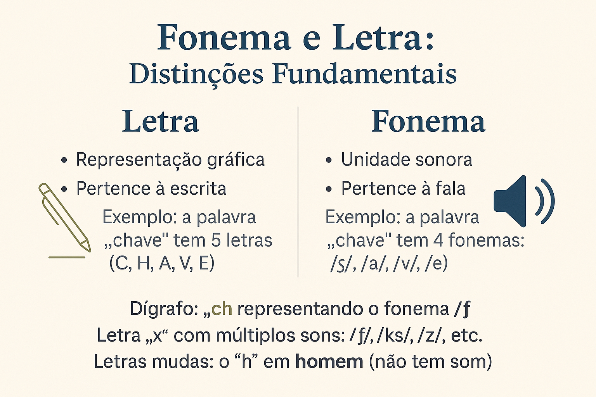

Fonema e Letra: Uma distinção fundamental na análise linguística
A distinção entre fonema e letra constitui um dos fundamentos da Fonologia, campo da Linguística que se ocupa dos sons enquanto elementos abstratos do sistema de uma língua. Ainda que frequentemente confundidos no senso comum, fonema e letra pertencem a níveis distintos da linguagem: o primeiro está relacionado ao plano fônico, isto é, ao som, enquanto o segundo integra o plano gráfico, vinculado à escrita.
O fonema é definido como a menor unidade sonora distintiva de uma língua, sendo responsável por estabelecer diferenças de sentido entre palavras. Trata-se, portanto, de uma entidade abstrata, não necessariamente coincidente com a realidade física do som, mas com sua função distintiva no sistema linguístico. Como observa Cagliari (2009), “o fonema não é o som em si, mas a representação mental do som que usamos para distinguir significados”. Por essa razão, dois sons fisicamente distintos podem ser compreendidos como variantes do mesmo fonema em determinada língua, desde que não resultem em oposição de significado.
Já a letra é a representação gráfica convencional de um fonema. Trata-se de um elemento do sistema ortográfico, regido por normas sociais e históricas que nem sempre refletem as particularidades fonológicas da língua. O alfabeto latino, utilizado no português, é um sistema limitado de caracteres que busca representar uma realidade fônica mais complexa. Essa discrepância faz com que, em muitos casos, não haja uma correspondência direta e biunívoca entre letra e fonema. Há letras que representam mais de um fonema (como o “x” em exame, tóxico, enxada), e fonemas que são representados por mais de uma letra (como o fonema /ʃ/, que pode ser grafado como “ch” em chuva ou “x” em xale).
A complexidade dessa relação é intensificada pelo fenômeno dos dígrafos, em que duas letras representam um único fonema, como em carro (/ʁ/), ou chave (/ʃ/). Do ponto de vista da fala, o número de fonemas de uma palavra pode, portanto, ser inferior ao número de letras que a compõem. Além disso, há casos em que a escrita conserva marcas históricas que já não têm correspondência fonológica na variante oral contemporânea, como o “h” inicial em homem, que é mudo.
Compreender a distinção entre fonema e letra é essencial para qualquer estudo fonológico, sobretudo no que tange à descrição e análise das estruturas sonoras do português brasileiro. Tal compreensão também contribui para o reconhecimento de variações linguísticas, para o domínio ortográfico e para a construção de uma abordagem crítica sobre o ensino da língua materna. Segundo Câmara Jr. (1970), a fonologia “não se interessa pelos sons da fala em sua realidade física, mas pela função que exercem no sistema linguístico”. Em outras palavras, o interesse está no papel distintivo e funcional do fonema, não em sua realização concreta ou na forma como é representado na escrita.
Em síntese, a letra é uma convenção gráfica; o fonema, uma unidade funcional da fala. A confusão entre esses dois conceitos compromete a análise linguística e o ensino crítico da linguagem, especialmente em contextos em que se exige rigor terminológico. Ao reconhecer essa distinção, o sujeito aprofunda sua compreensão sobre o funcionamento da língua e amplia sua competência linguística, indo além da mera decodificação da escrita.
Referências
CAGLIARI, Luiz Carlos. Alfabetização e Linguística. São Paulo: Scipione, 2009.
CÂMARA JR., Joaquim Mattoso. Estrutura da Língua Portuguesa. Petrópolis: Vozes, 1970.
CRYSTAL, David. A Dictionary of Linguistics and Phonetics. Oxford: Blackwell, 2003.